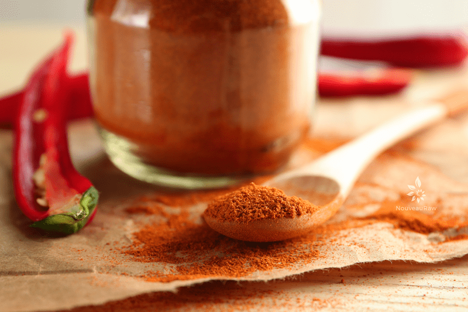

Homemade Chili Pepper Powder
 Last week I was gifted some gorgeous peppers that were grown organically just down the road from us. I wasn’t sure if they were hot or not, so they sort of scared me. I like things spicy but HOT… well the only bead of sweat that I want dripping down my forehead should come from Bikram Yoga. :)
Last week I was gifted some gorgeous peppers that were grown organically just down the road from us. I wasn’t sure if they were hot or not, so they sort of scared me. I like things spicy but HOT… well the only bead of sweat that I want dripping down my forehead should come from Bikram Yoga. :)
Every day, I walked passed the peppers as they took up residence on the counter. And every day, I left them sitting there undecided on what to do with them.
Finally, the day came where I HAD to do something or I was going to lose them, and I can’t handle wasting food… especially when someone graciously shared their crop with me. So I decided to dehydrate them and make a chili pepper powder.
Things I Learned
When drying peppers, it is best to keep the area well-ventilated. Hot peppers give off pungent fumes that can be irritating to the eyes, nose, and throat. Open the windows and bring in a portable fan or two to keep the air circulating.
Many many years ago, I stopped over at my friend’s house to find her relatives from Mexico there roasting peppers for salsa. After being in the house for only five minutes, I found my throat closing and I started coughing uncontrollably. I had to leave the house and sit out in the fresh air for quite some time before everything calmed down. Shew! Hot momma!
Another precaution that I learned the hard way is to always wear gloves when working with peppers. Don’t let their cuteness lure you into thinking you are safe… they contain a substance called capsaicin, which is a colorless, odorless, and oily chemical found in peppers. Unprotected, the capsaicin binds with certain sensory neurons which then, more or less, trick your body into thinking that it is being burned or at least experiencing excessive amounts of heat in the area that the capsaicin comes in contact with, even though no actual physical burning is taking place.
The white membranes inside a pepper contain the most capsaicin. The actual flesh contains less, and the seeds don’t contain any capsaicin at all. So the bottom line when dealing with peppers is… BE CAREFUL! I hope you have a hot and spicy weekend. blessings, amie sue
Ingredients:
Preparation:
- Wash the peppers thoroughly after picking to remove any dirt.
- Put on a pair of latex or vinyl gloves.
- Once you start cutting the peppers, DO NOT scratch your eyes, nose, face, or any other sensitive area of your body after handling. Been there, done that, logged the memory and never wish to revisit it again. :)
- Slice the peppers into slivers and place on the mesh sheet that comes with the dehydrator.
- Dry at 115 degrees (F) for roughly 10 hours.
- Start checking in on the peppers at the 6-hour mark and then keep an eye on them.
- Once dry, let them thoroughly cool.
- Put the gloves back on and place the sliced peppers in either the Bullet or coffee grinder. Grind to a powder.
- Pour the powder into a mesh strainer and with a spoon, move the powder around, gently pressing it through the strainer. Regrind the remaining larger pieces.
- I found that my coffee grinder worked the best to get a finer powder.
- Be careful not to inhale deeply in the presence of the powder.
- Pour into a mason jar and keep a tight lid on it.

© AmieSue.com